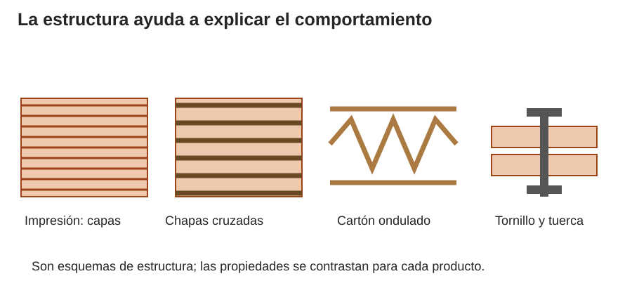
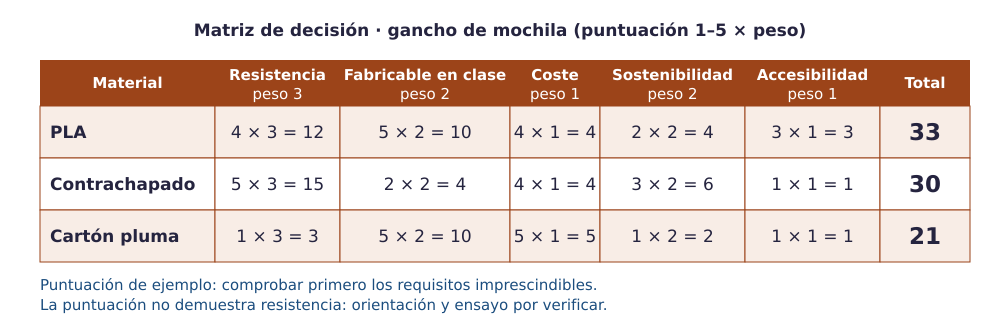

Contenido
Primero viabilidad; después preferencia
Una matriz ponderada ayuda a comparar opciones, pero no convierte una opción insegura en viable. Primero escribe requisitos imprescindibles: función, carga, entorno, dimensiones, disponibilidad y tiempo. Descarta o deja en estudio lo que no los haya demostrado. Sólo compara puntuaciones entre opciones admisibles.

| Material | Qué aporta | Qué limita su uso y fin de vida |
|---|---|---|
| PLA | Puede reproducir geometrías y relieves; sus propiedades dependen del producto y proceso. | Calor, golpes, capas, envejecimiento y carga sostenida requieren comprobación. Biobasado no significa compostable en casa. Consulta al gestor real: no se da por hecho que acepte piezas impresas. |
| PETG | Candidato cuando interesa tenacidad u otras propiedades especificadas por el fabricante. | No equivale automáticamente a «apto para exterior». Exige disponibilidad, perfil y prueba; no se introduce un material nuevo sin autorización. |
| Contrachapado o madera | Tableros y listones permiten estructuras planas, reparables y uniones mecánicas. | Espesor, dirección de fibras, humedad, defectos y unión influyen. Controla polvo y astillas. Reutiliza; consulta la recogida local. |
| Cartón y cartón pluma | Maquetas, plantillas y algunas piezas ligeras de interior. | Comprueba estabilidad y humedad; no lo uses como sustituto no ensayado de un soporte de carga. Cartón pluma mezcla materiales y no sigue necesariamente la recogida del cartón. |
| Tornillos y tuercas | Uniones desmontables y piezas reutilizables. | Comprueba diámetro, longitud, apriete, acceso y compatibilidad; no basta con que «entre». Recupera herrajes antes de separar residuos. |
El gancho y la matriz de decisión
La matriz siguiente ilustra cómo se multiplican puntuaciones por pesos: 33, 30 y 21 son resultados de unas valoraciones, no resultados de ensayos. El requisito de 5 kg es una puerta previa: si no se ha probado una combinación de diseño, material, orientación y fabricación, su viabilidad para esa carga sigue sin demostrarse.

Para la C del ejemplo, colocar el perfil completo sobre la bandeja evita el brazo superior suspendido que aparece al levantarla. Ésta es una razón de fabricabilidad, no una garantía de resistencia. La decisión final exige observar el laminado y realizar el ensayo supervisado del proyecto.
Elegir y justificar un material
Una decisión técnica vincula requisito, propiedad, dato y prueba.
- Escribe tres requisitos medibles y distingue los imprescindibles de las preferencias.
- Compara al menos dos candidatos. Anota si cada requisito se conoce por medida, ficha de producto o ensayo; lo no probado se declara como tal.
- Para las opciones viables, asigna pesos, puntúa con razones y calcula la matriz. Explica cualquier descarte aunque tenga buena puntuación.
- Estima cantidad y coste con unidades: por ejemplo, 12 g a 20 €/kg cuestan 12/1000 × 20 = 0,24 €. Es un ejemplo de cálculo, no la masa de tu pieza.
- Documenta origen, fabricación, transporte, duración/mantenimiento y destino real del residuo. Propón una mejora que no comprometa los requisitos.
Resultado esperado: Una elección defendible y sus límites.
Comprueba: No has sustituido un requisito esencial por una media favorable. La cantidad de material proviene de tu diseño o medida.
Error frecuente: Afirmar «15 % de relleno usa un tercio» sin comparar el mismo modelo y sus paredes, techos y soportes.
Piensa y comprueba. Un material barato obtiene 40 puntos, pero el ensayo de la unión falla antes de la carga requerida. Otro obtiene 32 y cumple. ¿Cuál eliges?
Ver explicación
La opción que cumple, si satisface los demás requisitos. La opción fallida se descarta o se rediseña y se vuelve a ensayar; la puntuación no compensa ese fallo.
Accesibilidad y sostenibilidad se prueban
Comprueba si se distingue el texto, si la pieza puede agarrarse sin mucha fuerza, si tiene bordes seguros y si cabe en el lugar previsto. El relieve no equivale por sí solo a braille ni demuestra accesibilidad para todas las personas. Usa una maqueta y recoge observaciones sin datos personales. Prioriza duración, reparación y desmontaje; reducir gramos deja de ser una mejora si la pieza pierde su función.
Relaciona
Relaciona cada requisito de una pieza con lo que hay que mirar para elegir el material.
Relaciona cada requisito de una pieza con lo que hay que mirar para elegir el material.
", "showMinimize": false, "itinerary": {"showClue": false, "clueGame": "", "percentageClue": 40, "showCodeAccess": false, "codeAccess": "", "messageCodeAccess": ""}, "cardsGame": [{"url": "", "x": 0, "y": 0, "author": "", "alt": "", "audio": "", "color": "#000000", "backcolor": "#ffffff", "eText": "Sostener%20una%20carga", "urlBk": "", "xBk": 0, "yBk": 0, "authorBk": "", "altBk": "", "audioBk": "", "colorBk": "#000000", "backcolorBk": "#ffffff", "eTextBk": "Geometr%C3%ADa%2C%20material%2C%20orientaci%C3%B3n%20y%20ensayo%20supervisado"}, {"url": "", "x": 0, "y": 0, "author": "", "alt": "", "audio": "", "color": "#000000", "backcolor": "#ffffff", "eText": "Uso%20con%20calor%20y%20sol", "urlBk": "", "xBk": 0, "yBk": 0, "authorBk": "", "altBk": "", "audioBk": "", "colorBk": "#000000", "backcolorBk": "#ffffff", "eTextBk": "Ficha%20del%20material%20y%20temperatura%20real%20de%20servicio"}, {"url": "", "x": 0, "y": 0, "author": "", "alt": "", "audio": "", "color": "#000000", "backcolor": "#ffffff", "eText": "Encaje%20entre%20dos%20piezas", "urlBk": "", "xBk": 0, "yBk": 0, "authorBk": "", "altBk": "", "audioBk": "", "colorBk": "#000000", "backcolorBk": "#ffffff", "eTextBk": "Medidas%20reales%20y%20probetas%20de%20holgura"}, {"url": "", "x": 0, "y": 0, "author": "", "alt": "", "audio": "", "color": "#000000", "backcolor": "#ffffff", "eText": "Reparaci%C3%B3n%20de%20una%20parte", "urlBk": "", "xBk": 0, "yBk": 0, "authorBk": "", "altBk": "", "audioBk": "", "colorBk": "#000000", "backcolorBk": "#ffffff", "eTextBk": "Uni%C3%B3n%20desmontable%20compatible%20con%20el%20dise%C3%B1o"}, {"url": "", "x": 0, "y": 0, "author": "", "alt": "", "audio": "", "color": "#000000", "backcolor": "#ffffff", "eText": "Reducir%20consumo", "urlBk": "", "xBk": 0, "yBk": 0, "authorBk": "", "altBk": "", "audioBk": "", "colorBk": "#000000", "backcolorBk": "#ffffff", "eTextBk": "Comparar%20geometr%C3%ADa%2C%20paredes%2C%20relleno%20y%20soportes%20manteniendo%20la%20funci%C3%B3n"}, {"url": "", "x": 0, "y": 0, "author": "", "alt": "", "audio": "", "color": "#000000", "backcolor": "#ffffff", "eText": "Fin%20de%20vida", "urlBk": "", "xBk": 0, "yBk": 0, "authorBk": "", "altBk": "", "audioBk": "", "colorBk": "#000000", "backcolorBk": "#ffffff", "eTextBk": "Separaci%C3%B3n%20de%20materiales%20y%20recogida%20realmente%20disponible"}], "isScorm": 0, "textButtonScorm": "Guardar la puntuación", "repeatActivity": true, "weighted": 100, "textAfter": "", "version": 2, "percentajeCards": 100, "type": 0, "showSolution": true, "timeShowSolution": 3, "time": 3, "evaluation": false, "evaluationID": "f96bc37c-5aaf-40e4-af65-a544218a46a6", "id": "idevice-1790324686800-kjtl49ldw", "msgs": {"msgSubmit": "Enviar", "msgClue": "¡Genial! La pista es:", "msgCodeAccess": "Código de acceso", "msgPlayStart": "Pulsa aquí para jugar", "msgScore": "Puntuación", "msgErrors": "Errores", "msgHits": "Aciertos", "msgMinimize": "Minimizar", "msgMaximize": "Maximizar", "msgFullScreen": "Pantalla Completa", "msgExitFullScreen": "Salir del modo pantalla completa", "msgNoImage": "Pregunta sin imágenes", "msgEndGameScore": "Comience la partida antes de guardar la puntuación.", "msgScoreScorm": "La puntuación no se puede guardar porque esta página no forma parte de un paquete SCORM.", "msgOnlySaveScore": "¡Solo puede guardar la puntuación una vez!", "msgOnlySave": "Solo puede guardar una vez", "msgInformation": "Información", "msgYouScore": "Su puntuación", "msgAuthor": "Autoría", "msgOnlySaveAuto": "Su puntuación se guardará después de cada pregunta. Solo puede jugar una vez.", "msgSaveAuto": "Su puntuación se guardará automáticamente después de cada pregunta.", "msgSeveralScore": "Puede guardar la puntuación tantas veces como quiera", "msgYouLastScore": "La última puntuación guardada es", "msgActityComply": "Ya ha realizado esta actividad.", "msgPlaySeveralTimes": "Puede realizar esta actividad cuantas veces quiera", "msgClose": "Cerrar", "msgAudio": "Audio", "msgNumQuestions": "Número de tarjetas", "msgTryAgain": "Necesitas al menos %s% de respuestas correctas para obtener la información. Inténtalo de nuevo.", "msgEndGameM": "Has completado el juego. Tu puntuación es %s.", "msgUncompletedActivity": "Actividad no completada", "msgSuccessfulActivity": "Actividad superada. Puntuación: %s", "msgUnsuccessfulActivity": "Actividad no superada. Puntuación: %s", "msgTypeGame": "Relaciona", "msgCheck": "Comprobar", "msgRestart": "Reiniciar"}}